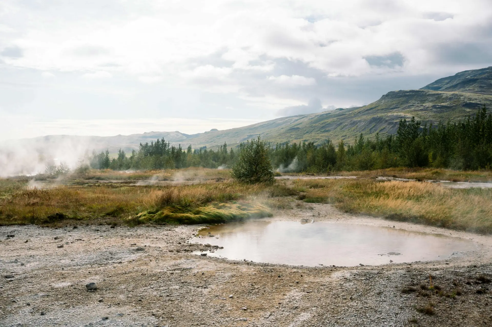

01
First Light in Iceland
Arrival and the Golden Circle
Your private driver-guide meets you at Keflavik Airport or Reykjavík. Depending on your arrival, the journey begins with a relaxed introduction to Iceland — through the moss-covered lava fields of Reykjanes, the colourful rooftops of Reykjavík, or straight into the Golden Circle's tectonic landscapes.
- Private pickup
- Reykjavík or Reykjanes
- Flexible start
- First Icelandic landscapes